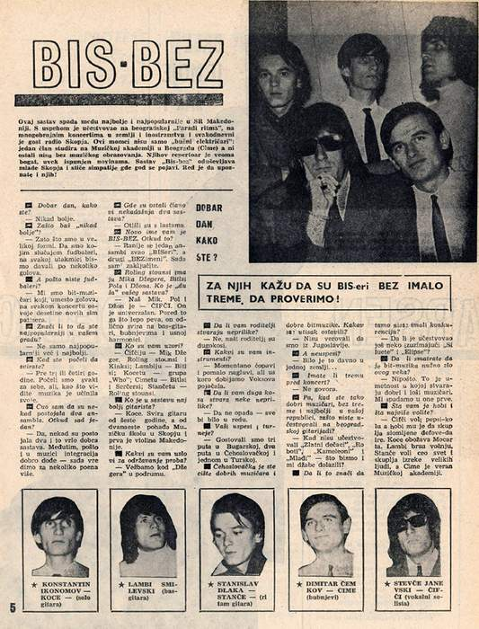

Bis Bez — Macedonian rock group created in 1964.This band is among the best and most popular in SR Macedonia. He successfully participated in the Belgrade "Rhythm Parade", numerous concerts in the country and abroad and was a daily guest of Radio Skopje. These guys are not just "noisy electricians": One member studies at the Academy of Music in Belgrade (Cime) and the rest are not without musical education either. Their repertoire is very rich, always filled with novelties. The group "Bis-bez" delights the youth of Skopje and gains sympathy wherever it appears. It's your turn to meet them too!
Good afternoon, how are you? - Never better. Why "never better"? - Because we are in great shape. If we were football players, we would score several goals in every game. And since you are not football players? - We are beat musicians who, instead of scoring goals, win dozens of new supporters at every concert. Does that mean you're the most popular in your town? - Not only the most popular, but also the best. When did you start playing? - Three or four years ago. We started each on our own, but, as you can see, the music took its toll. I heard that there used to be two ensembles. Now where did one come from? - Yes, there used to be two and a very good composition. However, since integration also comes in handy in music - now we are worth a few points more. Where are the other members of the former two teams? - They left with the swallows. Your new name is BIS-BEZ. Where did that come from? - Previously, one ensemble was called "BISeri", and the other "BEZimeni". Now make up your own mind. The Rolling Stones have Mick Jagger, the Beatles Paul and John. Who is the "soul" of your lineup? - Our Mick, Paul and John is — CHIFCI. He is universal. In addition to singing beautifully, he plays the bass guitar, drums and harmonica very well. Who are your role models? - Chifciu - Mick Jagger, Rolling Stones and Kinks; Lambiu - The Beatles: Kocetu - group "Who"; Cinnamon - The Beatles and Searchers; Stančetu - The Rolling Stones. Who is the best guitarist in the lineup? - Who will. He has been playing the guitar since the age of six, and since the age of twelve he has attended the Music School in Skopje and is the first violinist in Macedonia. What are your requirements for holding rehearsals? - We practice at "Džeger" in the basement. Are your parents giving you trouble? - No, our parents have long hair. What are your instruments like? - Right now it's choppy and a bit hard of hearing, but soon we'll get Vox amplifiers. Does your long hair cause any problems for you? - If it didn't fall - everything would be fine.
Your successes and tours? - We visited three times in Bulgaria, twice in Czechoslovakia and once in Turkey. Czechoslovakia is a melting pot of good musicians and good beat music. What impression did you make? - They didn't believe that we were from Yugoslavia. And failures? - It was a long time ago in a country... Do you have stage fright before a concert? - No speech. Well, when you are such good musicians, fearless and the best in your republic, why didn't you take part in the Belgrade guitar festival? - If the "Golden Boys", "Robots", "Chameleons" and "Mladi" did not participate - why would we come for nothing? Does that mean you had no competition there? - Did anyone else participate besides "Silhouettes" and "Ellipses"? Do you think that beat music is the necessary evil of this century? - Not at all. It is an art in which good and bad musicians create. We belong to the first ones. What is your hobby, what do you like the most? - Chifchi likes Pepsi-Cola, and his hobby is collecting broken Defove-Dairs. Koce loves Mozart. Lambi drives fast, Stanče loves the whole world and collects sayings of great people, and Cime is loyal to the Music Academy.